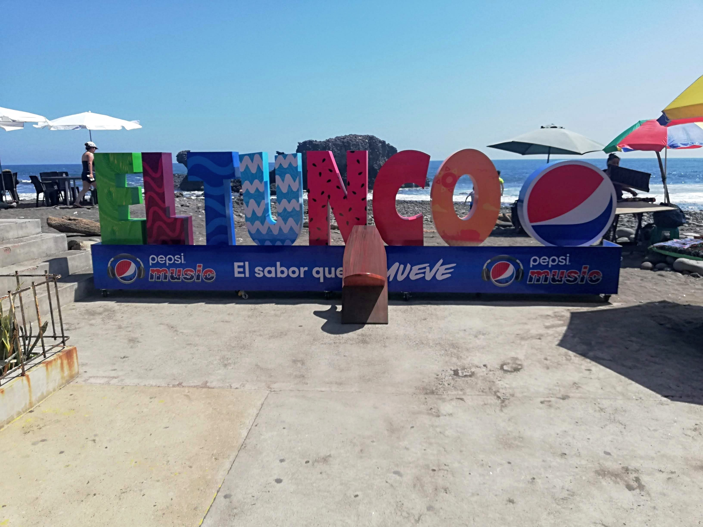

El Tunco Beach
El Tunco is a surfer’s paradise and a cultural hotspot on El Salvador’s Pacific coast. Just 45 minutes from San Salvador, this small beach town offers a unique mix of epic waves, volcanic sand, and a vibrant social scene that makes it one of the most visited spots in the country.
1. World-Class Surfing
El Tunco is famous for its consistent surf breaks, making it a top destination for surfers of all levels. Whether you’re a pro chasing barrels or a beginner taking your first lesson, the waves here deliver.
2. Iconic Rock Formation
The beach is named after the large pig-shaped rock (“El Tunco” means “The Pig”) that sits just offshore—one of the most photographed landmarks in El Salvador. At sunset, it creates a dramatic silhouette against the golden sky.
3. Lively Beach Town Vibe
El Tunco comes alive with music, art, and good vibes. The streets are lined with:
- Trendy surf shops and local artisan stands
- Beach bars playing live music
- Cafés serving smoothie bowls, pupusas, and cold beers
4. Yoga & Wellness
Beyond surfing, many visitors come for the relaxing atmosphere. You’ll find:
- Morning yoga classes with ocean views
- Massage and wellness centers
- Healthy food spots with vegan and vegetarian options
5. Perfect Weekend Getaway
Whether you’re here to ride waves, catch a sunset, or enjoy El Salvador’s youthful surf culture, El Tunco offers the perfect mix of adventure and relaxation.